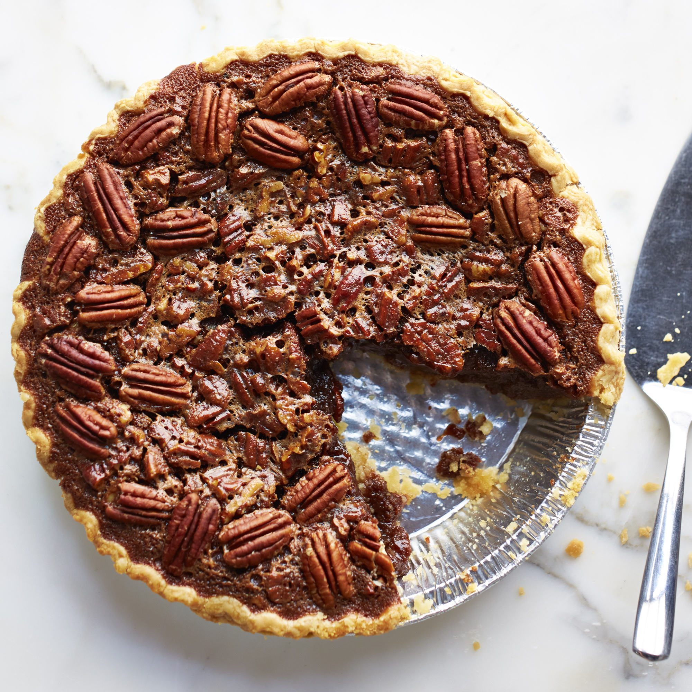

Pecan Pie Bleu

Description
Our favorite dessert! You can't be born in the south and resist the call of a home cooked pecan pie. Easy to make, even easier to eat. We can eat an entire one of these in one sitting.
Prep: 10 mins
Cook: 50 mins
Total: 1hr
Servings: 1x 9 inch pie
Ingredients
- 1¾ cups white sugar
- ¼ cup dark corn syrup
- ¼ cup butter
- 1 tablespoon cold water
- 2 teaspoons cornstarch
- 3 eggs
- ¼ teaspoon salt
- 1 tablespoon vanilla extract
- 1¼ cup chopped pecans
- 1 9-inch unbaked pie shell
Steps
- Preheat oven to 350 degrees F (175 degrees C).
- Combine sugar, corn syrup, butter, water, and cornstarch in a saucepan over medium heat. Bring to a full boil, and remove from heat.
- In a large bowl, beat eggs until frothy. Gradually beat in cooked syrup mixture. Stir in salt, vanilla, and pecans. Pour into pie shell.
- Bake in the preheated oven until filling is set, 45 to 50 minutes.
Back to Top
Back to Main Menu